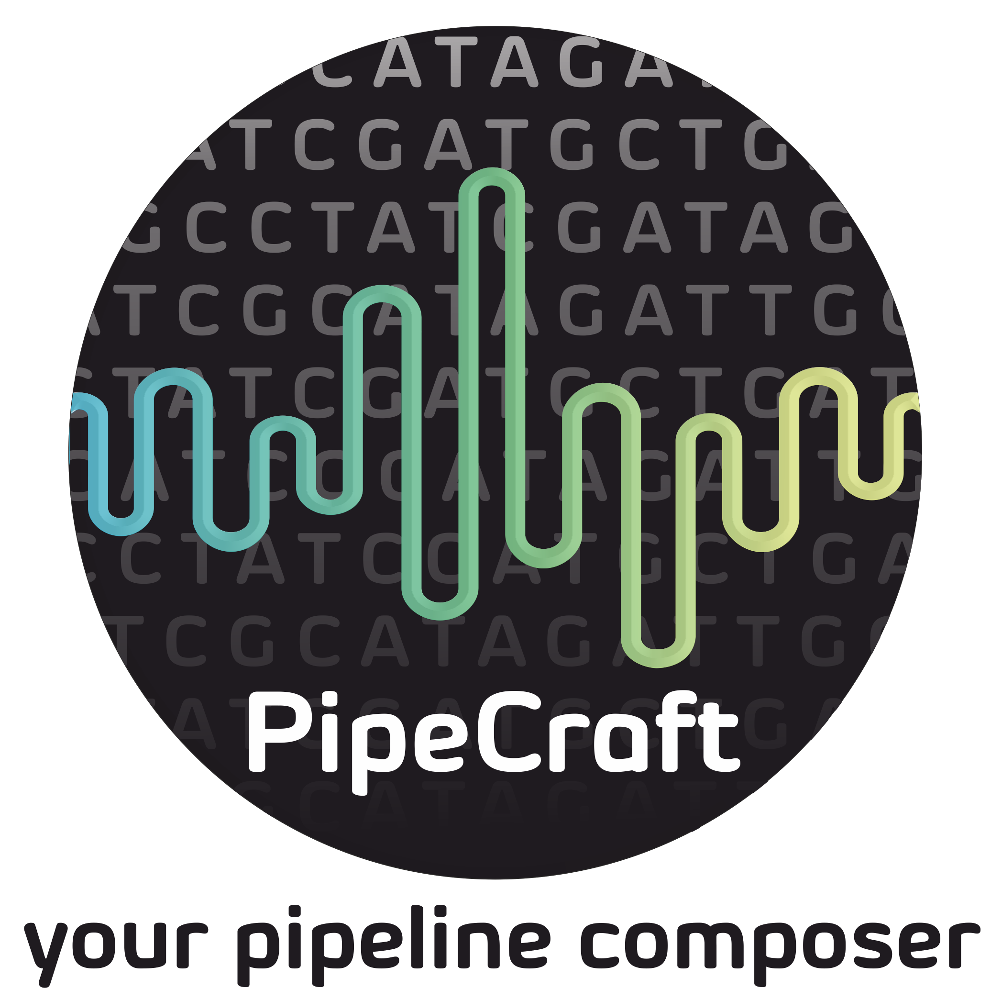
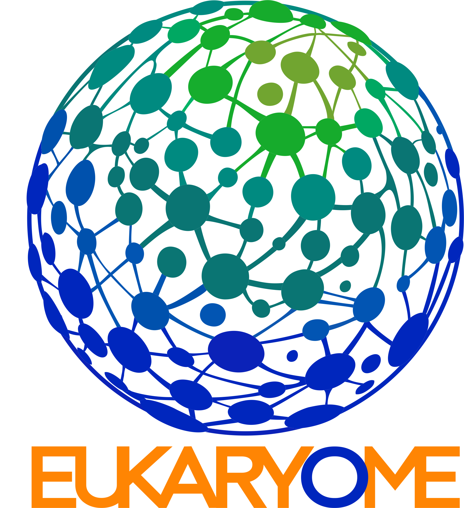
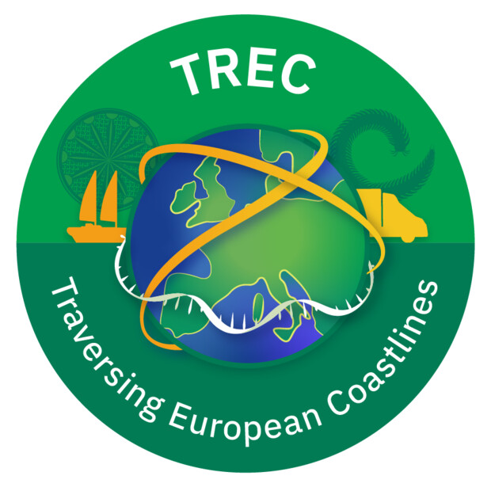
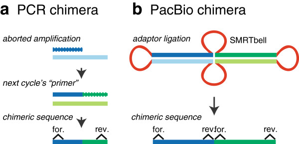
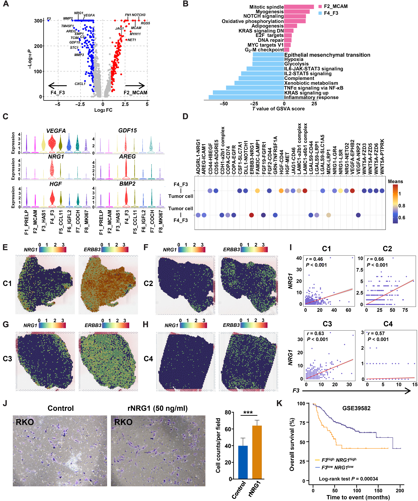

Key Projects
Selected computational biology projects and collaborative research infrastructures.

PipeCraft2
Bioinformatics Pipeline
Development of new modules for a comprehensive metabarcoding analysis ecosystem.

EUKARYOME
Reference Database
rRNA reference database development for comprehensive eukaryotic taxonomic identification.

DEASS
Statistical Method
Differential expression analysis sample-by-sample with robust performance on heterogeneous transcriptomic datasets.

TREC Project
International Collaboration
Large-scale coastal ecosystem sampling and analysis through the Traversing European Coastlines consortium.

Long-read Chimera Detection
Algorithm Evaluation
Benchmarking chimera-detection methods for long-read amplicon studies and establishing practical recommendations.

Single-Cell Genomics
Cancer Research
scRNA-seq and CROP-seq analysis for gastric cancer organoids with ML-aided interpretation.